Chapter 2 Simple and multiple regression
This chapter is meant to give a short introduction to simple regression. It is mostly meant to reintroduce some basic concepts, introduce notation, and get everybody on the same page.
2.2 Exercises
Exercise 1
Simulate a data set based on a simple regression model with
\[\begin{align*} \beta_0 & = 0.2\\ \beta_1 & = 0.3\\ \sigma & = 0.5\\ x & \in [1, 20]~\text{in steps of 1} \end{align*}\]
What functions in R do we need?
Exercise 2
Simulate data with the parameters from Exercise 1
Do not assume that we have one subject per value for \(x\), but more than one subject
Simulate data for \(n=40\) and \(n=100\)
Hint: Use
sample(x, n, replace = TRUE)Re-cover your parameters as done on slide 11
What happens to your standard errors?
Solution
Code
n <- 100 # 40
x0 <- 1:20
x <- sample(x0, n, replace=TRUE)
a <- 0.2
b <- 0.3
sigma <- 0.5
y <- 0.2 + 0.3*x + rnorm(n, sd=sigma)
dat <- data.frame(x, y)
pars <- replicate(2000, {
ysim <- 0.2 + 0.3*x + rnorm(n, sd=sigma)
lm1 <- lm(ysim ~ x, dat)
c(coef(lm1), sigma(lm1))
})
rowMeans(pars)
# standard errors
apply(pars, 1, sd)
hist(pars[1, ])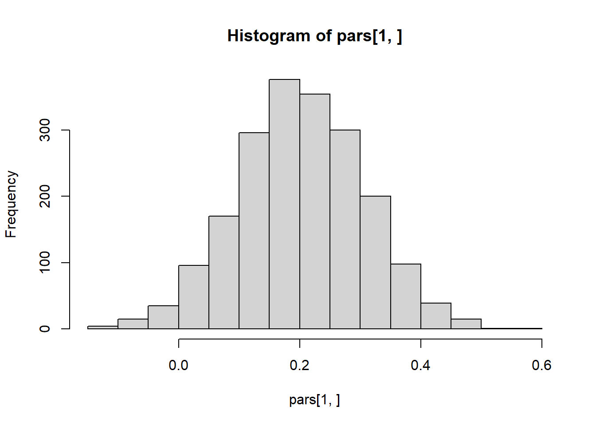
Code
hist(pars[2, ])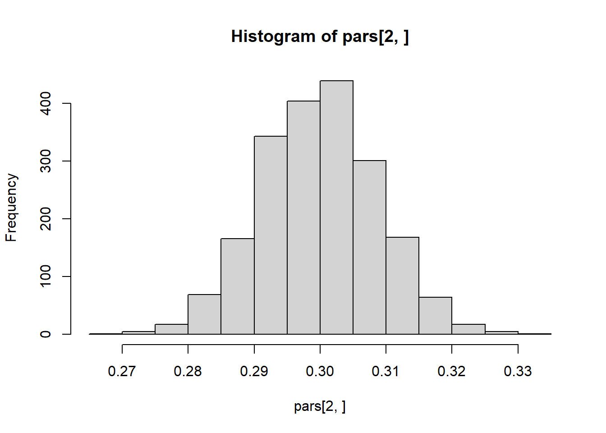
Code
hist(pars[3, ])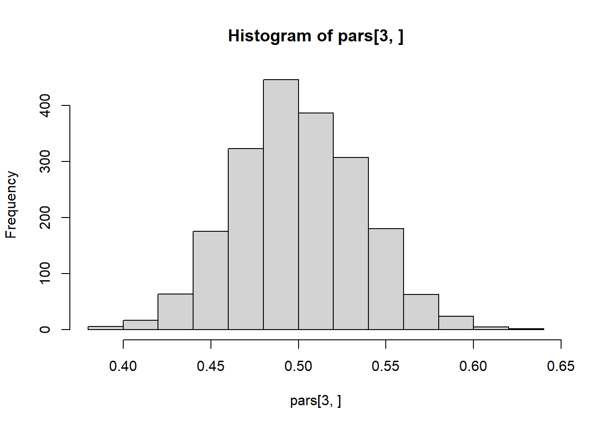
Code
plot(y ~ jitter(x), dat)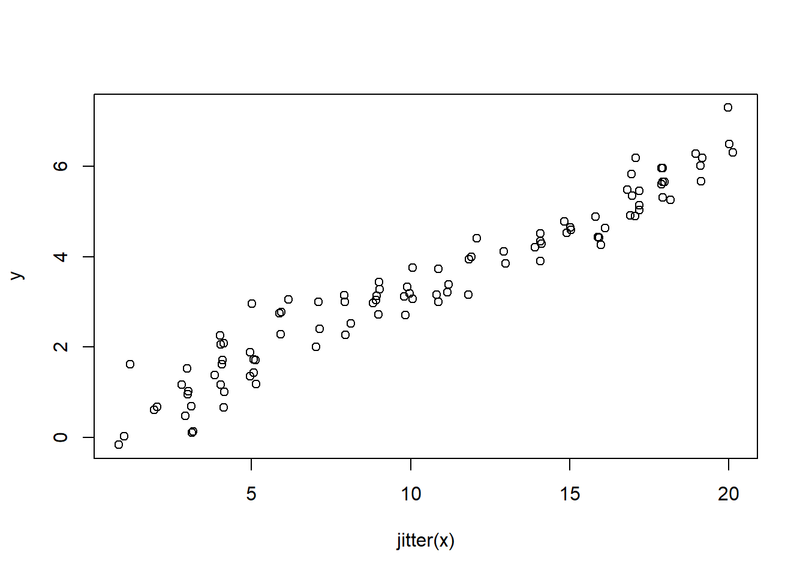
Example to illustrate assumptions
Code
data(anscombe)
lm1 <- lm(y1 ~ x1, anscombe)
lm2 <- lm(y2 ~ x2, anscombe)
lm3 <- lm(y3 ~ x3, anscombe)
lm4 <- lm(y4 ~ x4, anscombe)
rbind(coef(lm1), coef(lm2), coef(lm3), coef(lm4))## (Intercept) x1
## [1,] 3.000091 0.5000909
## [2,] 3.000909 0.5000000
## [3,] 3.002455 0.4997273
## [4,] 3.001727 0.4999091Code
par(mfrow=c(2,2))
plot(y1 ~ x1, anscombe, pch=16, col="blue")
abline(lm1, lwd=2)
plot(y2 ~ x2, anscombe, pch=16, col="blue")
abline(lm2, lwd=2)
plot(y3 ~ x3, anscombe, pch=16, col="blue")
abline(lm3, lwd=2)
plot(y4 ~ x4, anscombe, pch=16, col="blue")
abline(lm4, lwd=2)
Code
dat <- reshape(anscombe, direction="long", varying=list(1:4, 5:8),
timevar="reg", v.names=c("x", "y"))[,-4]
lattice::xyplot(y ~ x | as.factor(reg), dat, pch=16, type=c("p", "r"))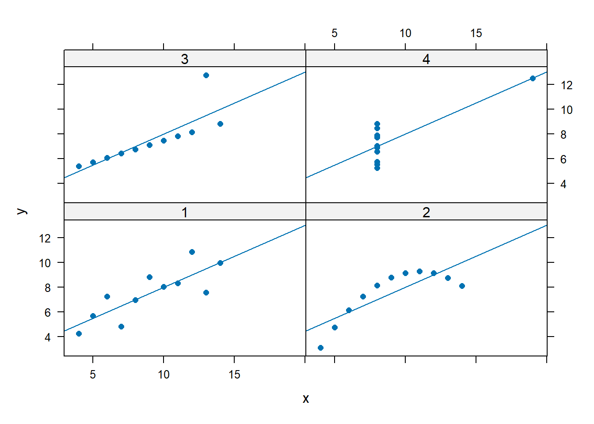
Code
lattice::xyplot(y ~ x | as.factor(reg), dat, pch=16, type=c("p", "smooth"))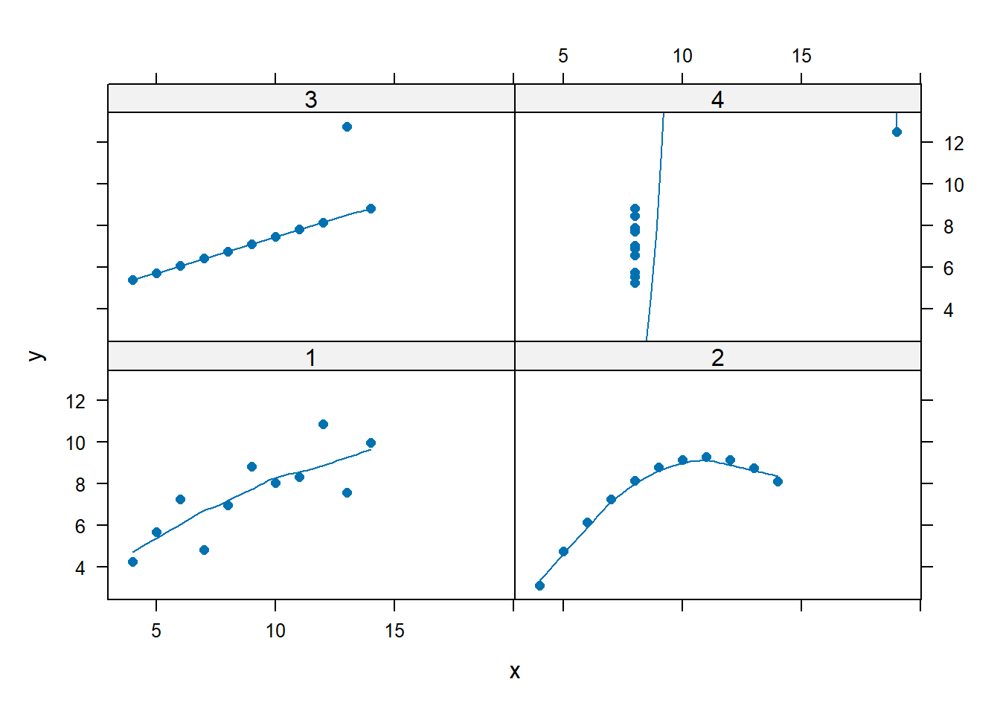
Code
lattice::xyplot(y ~ x | as.factor(reg), dat, pch=16, type=c("p", "spline"))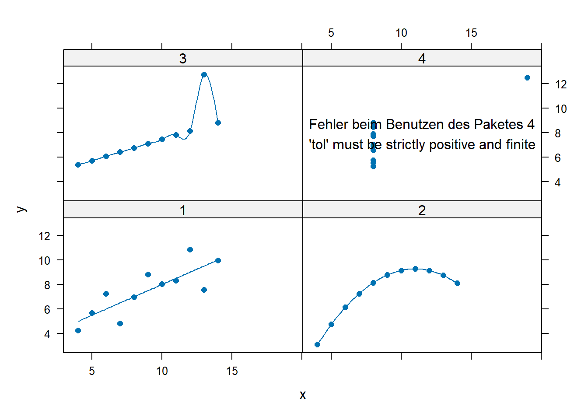
Code
par(mfrow=c(2,2))
plot(lm1)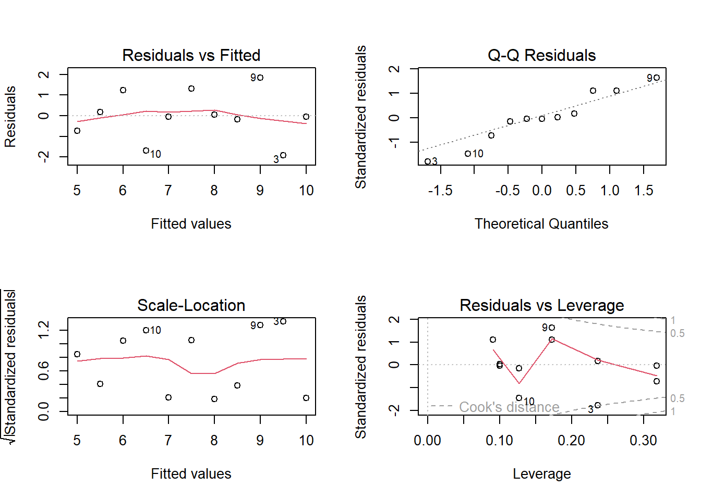
Code
plot(lm2)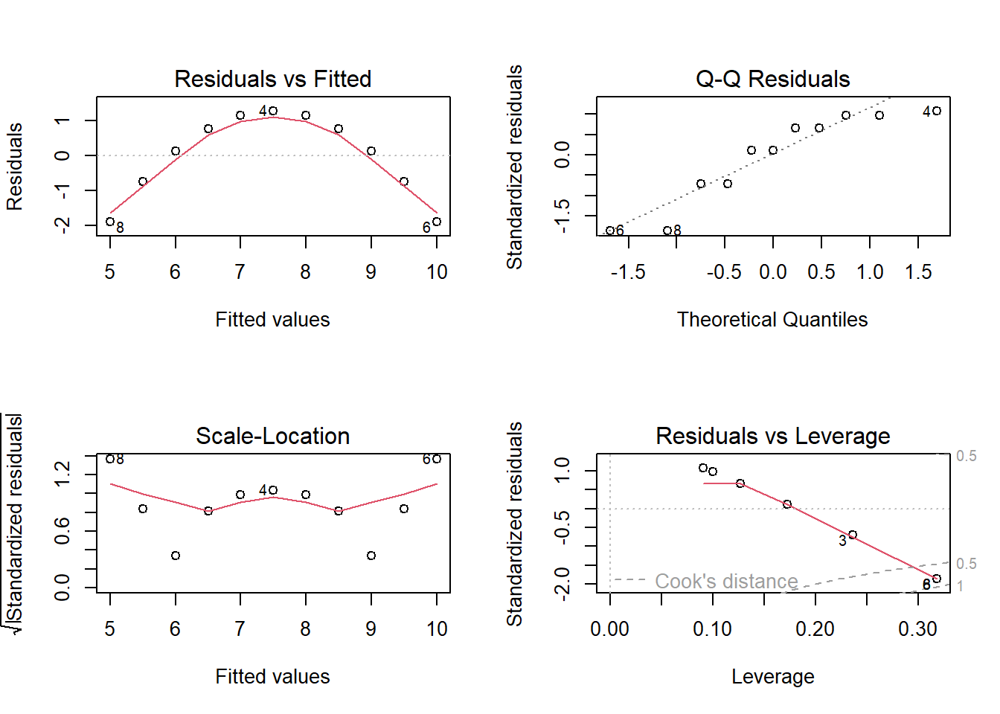
Code
plot(lm3)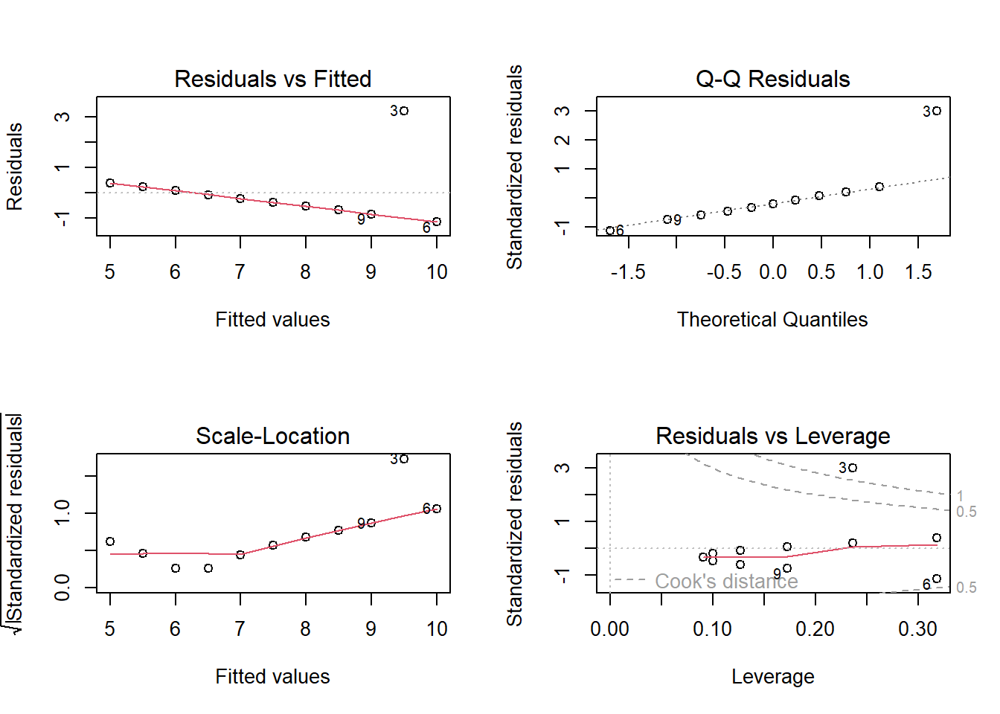
Code
plot(lm4)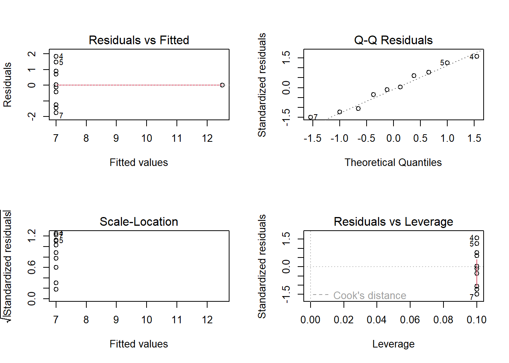
Code
#--------------- (1) Exercise 1 ---------------
x <- rnorm(100, mean=1)
y <- rnorm(100, mean=2)
dat <- data.frame(id=1:200, group=rep(c("x","y"), each=100), score=c(x, y))
rm(x,y)
t1 <- t.test(score ~ group, dat, var.equal=TRUE)
lm1 <- lm(score ~ group, dat)
aov1 <- aov(score ~ group, dat)
(stat <- list(
coef=matrix(c(t1$estimate, lm1$coef, aov1$coef), 2, 3,
dimnames=list(NULL, c("ttest", "lm", "aov"))),
statistics=matrix(c(t=t1$statistic^2, Flm=summary(lm1)$fstatistic[1],
Faov=unlist(summary(aov1))[7]), 1, 3, dimnames=list(NULL,
c("t","Flm","Faov"))))
)## $coef
## ttest lm aov
## [1,] 0.8095443 0.8095443 0.8095443
## [2,] 1.9533855 1.1438412 1.1438412
##
## $statistics
## t Flm Faov
## [1,] 69.51959 69.51959 69.51959Code
#--------------- (2) Exercise 2 ---------------
data(cars)
lm1 <- lm(dist ~ speed, cars)
summary(lm1)##
## Call:
## lm(formula = dist ~ speed, data = cars)
##
## Residuals:
## Min 1Q Median 3Q Max
## -29.069 -9.525 -2.272 9.215 43.201
##
## Coefficients:
## Estimate Std. Error t value Pr(>|t|)
## (Intercept) -17.5791 6.7584 -2.601 0.0123 *
## speed 3.9324 0.4155 9.464 1.49e-12 ***
## ---
## Signif. codes: 0 '***' 0.001 '**' 0.01 '*' 0.05 '.' 0.1 ' ' 1
##
## Residual standard error: 15.38 on 48 degrees of freedom
## Multiple R-squared: 0.6511, Adjusted R-squared: 0.6438
## F-statistic: 89.57 on 1 and 48 DF, p-value: 1.49e-12Code
hist(resid(lm1))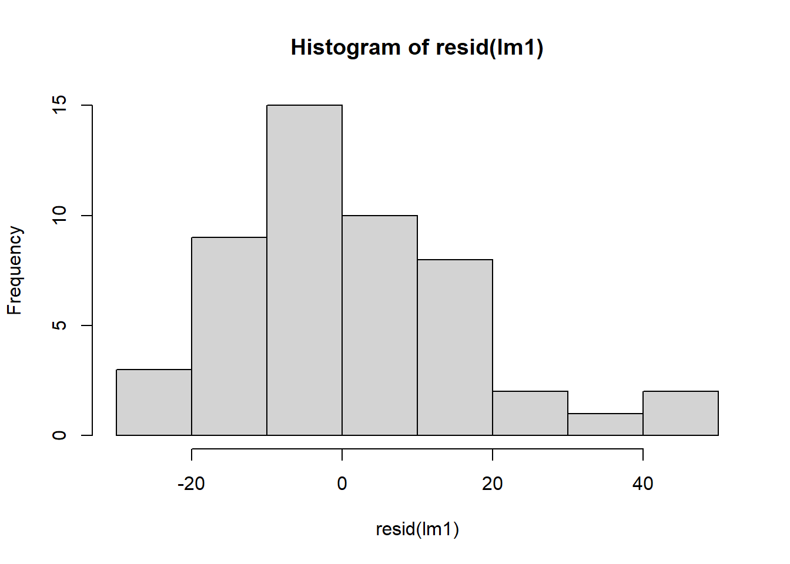
Code
par(mfrow=c(2,2))
plot(lm1)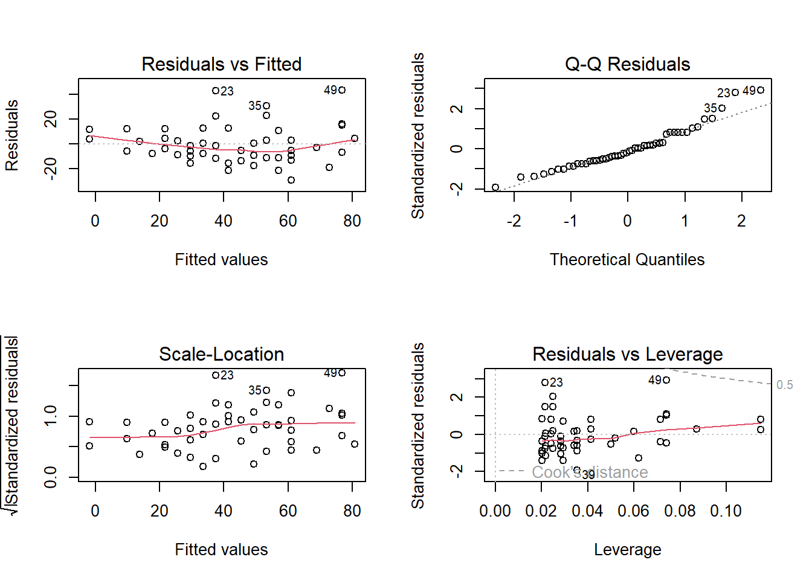
Code
lm2 <- lm(dist ~ speed + I(speed^2), cars)
anova(lm1, lm2)## Analysis of Variance Table
##
## Model 1: dist ~ speed
## Model 2: dist ~ speed + I(speed^2)
## Res.Df RSS Df Sum of Sq F Pr(>F)
## 1 48 11354
## 2 47 10825 1 528.81 2.296 0.1364Code
#--------------- (3) Exercise 3 ---------------
dat <- data.frame(x = 37:43,
y = c(2, 3, 10, 25, 34, 36, 39),
n = 40)
glm1 <- glm(cbind(y, n-y) ~ x, binomial, dat)
a <- 1 / coef(glm1)[2]
c <- -coef(glm1)[1]/coef(glm1)[2]
newx <- seq(37, 43, .1)
pre <- predict(glm1, data.frame(x=newx), type="response")
plot(y/n ~ x, dat, pch=16, ylab="Probability to say brighter")
lines(pre ~ newx, dat)
abline(v=c, h=.5, lty=3)
text(39, .8, paste("PSE =", round(c,2)))
# goodness-of-fit test
glms <- glm(cbind(y, n-y) ~ factor(x), binomial, dat)
anova(glm1, glms, test="Chisq")## Analysis of Deviance Table
##
## Model 1: cbind(y, n - y) ~ x
## Model 2: cbind(y, n - y) ~ factor(x)
## Resid. Df Resid. Dev Df Deviance Pr(>Chi)
## 1 5 2.6037
## 2 0 0.0000 5 2.6037 0.7608Code
# overdispersion
summary(glm(cbind(y, n-y) ~ x, quasibinomial, dat))##
## Call:
## glm(formula = cbind(y, n - y) ~ x, family = quasibinomial, data = dat)
##
## Coefficients:
## Estimate Std. Error t value Pr(>|t|)
## (Intercept) -47.80797 3.87192 -12.35 6.17e-05 ***
## x 1.20216 0.09724 12.36 6.13e-05 ***
## ---
## Signif. codes: 0 '***' 0.001 '**' 0.01 '*' 0.05 '.' 0.1 ' ' 1
##
## (Dispersion parameter for quasibinomial family taken to be 0.537067)
##
## Null deviance: 182.7247 on 6 degrees of freedom
## Residual deviance: 2.6037 on 5 degrees of freedom
## AIC: NA
##
## Number of Fisher Scoring iterations: 4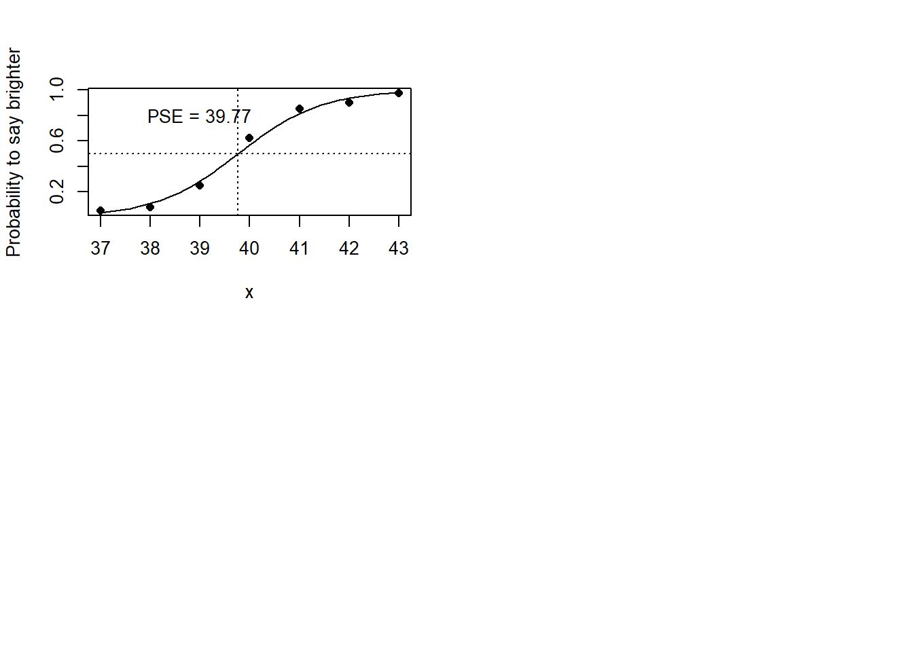